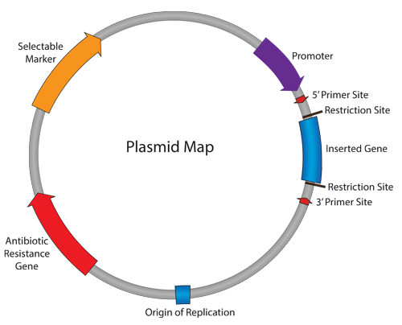

Background¶
Transformation is a process where foreign DNA is introduced into a cell. Bacterial cells are commonly used as host cells for making copies of plasmid DNA in the lab because they are quick and easy to grow.
Bacteria, especially E.coli, are the workhorse of a molecular lab. They are versatile organisms that can take in DNA and replicate it.
The bacterial genome is a circular piece of DNA that, unlike eukaryotic DNA, is not contained within a nucleus. Bacteria can also take in small circles of DNA, call plasmids.
What is plasmid DNA?¶
A plasmid is a double-stranded circular piece of DNA that is separate from the chromosomal DNA of the cell (Figure 1). It replicates independently of the chromosomal DNA.
Plasmids are used in molecular laboratories when studying or manipulating genes, using specifically engineered plasmids, commonly referred to as vectors.
{kind=link}
Figure 1 Basic plasmid map (Addgene website)
There are thousands of different types of plasmids, but a basic structure is illustrated here. Some essential components of a plasmid are:
- Inserted gene - a gene of interest, or part of a gene, that is inserted into the plasmid.
- Origin of replication - a small, specific sequence where DNA replication begins.
- Antibiotic resistance gene - a gene that produces a protein that confers upon the bacteria, resistance to a particular antibiotic.
- Promoter - a sequence of DNA that drives the transcription of the inserted gene. The promoter will determine which cell types the gene is expressed in, for example, bacterial, mammalian or yeast.
Why use plasmids?¶
Plasmids are an essential part of the molecular biologist’s toolbox. When studying the function of a specific gene, cloning that gene, or part of that gene, into a plasmid enables the gene to be studied in a systematic way.
Even plasmids carrying mammalian genes, designed for mammalian cell expression, can be stored and replicated in bacteria. This can occur because the plasmid carries a sequence called the bacterial origin of replication which, as the name suggests, is the point on the plasmid where replication begins. The plasmid also carries an antibiotic resistance gene, which is used as a selectable marker. When the bacteria are grown on a medium that contains a specific antibiotic, if that antibiotic resistance gene is carried on the plasmid, only the successfully transformed bacterial cells will grow.
When plasmids are introduced (transformed) into bacterial cells, the bacteria can generate millions of copies of the plasmids within hours. The plasmid can then be extracted from the bacteria for subsequent study.
The process of transforming plasmid DNA into E.coli cells involves several sequential steps over 5 days.